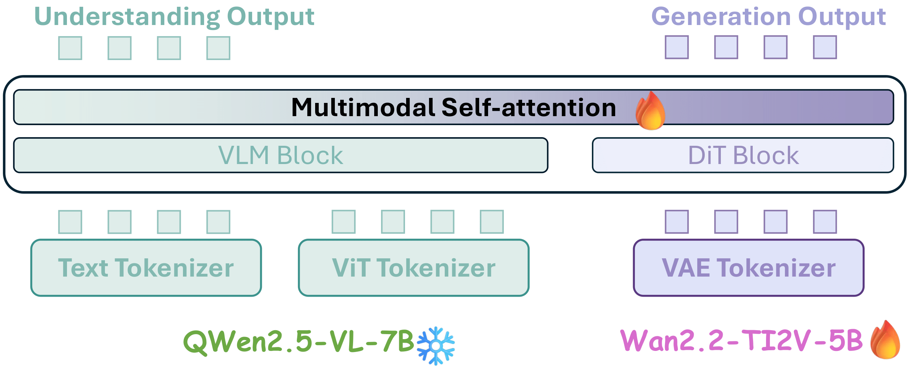
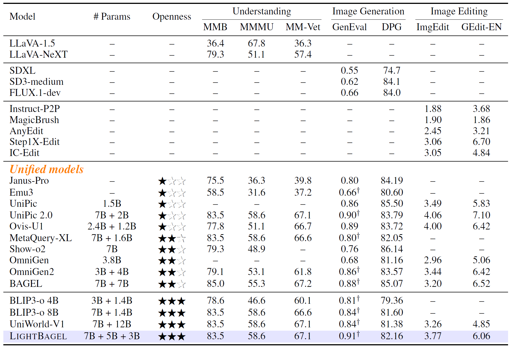

Abstract
Unified multimodal models have recently shown remarkable gains in both capability and versatility, yet most leading systems are still trained from scratch and require substantial computational resources. In this paper, we show that competitive performance can be obtained far more efficiently by strategically fusing publicly available models specialized for either generation or understanding. Our key design is to retain the original blocks while additionally interleaving multimodal self-attention blocks throughout the networks. This double fusion mechanism (1) effectively enables rich multi-modal fusion while largely preserving the original strengths of the base models, and (2) catalyzes synergistic fusion of high-level semantic representations from the understanding encoder with low-level spatial signals from the generation encoder. By training with only ~ 35B tokens, this approach achieves strong results across multiple benchmarks: 0.91 on GenEval for compositional text-to-image generation, 82.16 on DPG-Bench for complex text-to-image generation, 6.06 on GEditBench, and 3.77 on ImgEdit-Bench for image editing. By fully releasing the entire suite of code, model weights, and datasets, we hope to support future research on unified multimodal modeling..
Model Architecture

Figure 2. Overview of the LightBagel architecture. Text and ViT tokens (understanding pathway)
and VAE tokens (generation pathway) are processed by pre-trained VLM and DiT blocks, respectively.
At each layer, a zero-initialized multimodal self-attention module enables cross-modal interactions
without altering the original model architectures.
Quantitative Results

Table 1. Comparison of different models across understanding, generation, editing, and in-context Generation tasks. † refers to the methods using LLM rewriter. For UMMs, ★☆☆ refers to only model checkpoints and evaluation code being released; ★★☆ refers to only model checkpoints and training/evaluation code being released; ★★★ refers to the full suite of all the {model, data, code} being released.
Qualitative Results

Figure 3. Qualitative text-to-image results from LightBagel, showcasing high-quality generations with strong fidelity to text prompts and consistent rendering across diverse aspect ratios.

Figure 4. Qualitative image editing results generated by LIGHTBAGEL. The model produces high-quality outputs across a diverse range of editing tasks.
BibTeX
TBD